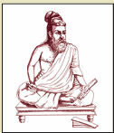

நுழையும் முன்
மக்கள் பயனுள்ள முறையில் வாழ வழிகாட்டிகளாக அமைபவை
அறநூல்கள். அறநூல்களில் உலகப் பொது மறை என்று போற்றப்படும் சிறப்புப் பெற்றது நம் திருக்குறள். திருக்குறளில் இல்லாத செய்திகளே இல்லை. ஏழு சொற்களில் மனிதர்களுக்கு அறத்தைக் கற்றுத்தரும் திருக்குறளைப் பயிலுவோம், வாழ்வில் பின்பற்றுவோம்.
கடவுள் வாழ்த்து
1, அகர முதல எழுத்தெல்லாம் ஆதி
பகவன் முதற்றே உலகு.
அகரமே எழுத்துகளுக்குத் தொடக்கம். அதுபோல ஆதி பகவனே உலகுக்குத் தொடக்கம்.
வான் சிறப்பு
2, விண்இன்று பொய்ப்பின் விரிநீர் வியனுலகத்து
உள்நின்று உடற்றும் பசி.
மழை உரியகாலத்தில் பெய்யாது போனால், உலகத்து உயிர்களை எல்லாம் பசி துன்புறுத்தும்.
3, கெடுப்பதூஉம் கெட்டார்க்குச் சார்வாய்மற்று ஆங்கே
எடுப்பதூஉம் எல்லாம் மழை. மனப்பாடப் பகுதி
உரிய காலத்தில் பெய்யாது கெடுப்பதும் மழைதான். உரிய காலத்தில் பெய்து காப்பதும் மழைதான்.
நீத்தார் பெருமை
4, செயற்கரிய செய்வார் பெரியர் சிறியர்
செயற்கரிய செய்கலா தார்.
முடியாத செயலையும் முடித்துக் காட்டுபவர் பெரியோர்; முடியாது என்பவர் சிறியோர்.
மக்கட்பேறு
5, தம்மின்தம் மக்கள் அறிவுடைமை மாநிலத்து
மன்னுயிர்க்கு எல்லாம் இனிது.
தம்மைவிடத் தம் பிள்ளைகள் அறிவுடையோர் என்றால் மக்களுக்கு அதுதான் மகிழ்ச்சி.
6, ஈன்ற பொழுதின் பெரிதுவக்கும் தன்மகனைச்
சான்றோன் எனக்கேட்ட தாய். மனப்பாடப் பகுதி
தன் பிள்ளையின் புகழைக் கேட்ட தாய் பெற்றெடுத்தபோது அடைந்த மகிழ்ச்சியை விடப் பெருமகிழ்ச்சி அடைவாள்.
அன்புடைமை
7, அன்பிலார் எல்லாம் தமக்குரியர் அன்புடையார்
என்பும் உரியர் பிறர்க்கு. மனப்பாடப் பகுதி
அன்பு இல்லாதவர் எல்லாப் பொருளும் தமக்கே என்பார்கள். அன்பு உடையவர்கள் தம் உடம்பும் பிறர்க்கே என்பார்கள்.
8, அன்பின் வழியது உயிர்நிலை அக்திலார்க்கு
என்புதோல் போர்த்த உடம்பு.
அன்பு இருப்பதுதான் உயிருள்ள உடல். அன்பு இல்லாதது வெறும் எலும்பும் தோலும் தான்.
இனியவை கூறல்
9, பணிவுடையன் இன்சொலன் ஆதல் ஒருவற்கு
அணியல்ல மற்றுப் பிற.
பணிவும் இன்சொல்லுமே ஒருவருக்கு மிகச்சிறந்த அணிகலன்கள் ஆகும். மற்றவை அணிகலன்கள் ஆகா.
10, இனிய உளவாக இன்னாத கூறல்
கனியிருப்பக் காய்கவர்ந் தற்று. மனப்பாடப் பகுதி
இனிய சொல் இருக்கும்போது இன்னாச்சொல் பேசுவது கனி இருக்கும்போது காயை உண்பதைப் போன்றது.

திருவள்ளுவர் இரண்டாயிரம் ஆண்டுகளுக்கு முற்பட்டவர். எக்காலத்துக்கும் பொருந்தும் வாழ்க்கை நெறிகளை வகுத்துக் கூறியுள்ளார். வான்புகழ் வள்ளுவர், தெய்வப்புலவர், பொய்யில் புலவர் முதலிய பல சிறப்புப் பெயர்கள் இவருக்கு உண்டு.
திருக்குறள் அறத்துப்பால், பொருட்பால், இன்பத்துப்பால் என்னும் மூன்றுபிரிவுகளைக் கொண்டது. பதினெண்கீழ்க்கணக்கு நூல்களுள் ஒன்று.
திருக்குறள் 133 அதிகாரங்களில் 1330 குறட்பாக்களைக் கொண்டுள்ளது. திருக்குறளில் இல்லாததும் இல்லை, சொல்லாததும் இல்லை என்னும் வகையில் சிறந்து விளங்குகிறது. திருக்குறளுக்கு உலகப் பொதுமறை, வாயுறை வாழ்த்து முதலிய பல சிறப்புப் பெயர்கள் உண்டு. நூற்றுக்கும் மேற்பட்ட மொழிகளில் திருக்குறள் மொழிபெயர்க்கப்பட்டுள்ளது.
1, மக்களுக்கு மகிழ்ச்சி தருவது டேஷ்
அ, ஊக்கமின்மை
ஆ, அறிவுடைய மக்கள்
இ, வன்சொல்
ஈ, சிறிய செயல்
2, ஒருவர்க்குச் சிறந்த அணி டேஷ்
அ, மாலை
ஆ, காதணி
இ, இன்சொல்
ஈ, வன்சொல்
1, இனிய டேஷ் இன்னாத கூறல்
கனியிருப்பக் டேஷ் கவர்ந் தற்று.
2, அன்பிலார் டேஷ் தமக்குரியர் அன்புடையார்
டேஷ் உரியர் பிறர்க்கு.
செயற்கரிய செய்வார் பெரியர் சிறியர்
செயற்கரிய செய்கலா தார்.
இந்தக் குறளில் உள்ள எதுகை, மோனைச் சொற்களை எடுத்து எழுதுக.
2016 ஆம் ஆண்டு ரியோ நகரில் மாற்றுத்திறனாளிகள் ஒலிம்பிக் போட்டி நடைபெற்றது. அதில் தமிழ்நாட்டைச் சேர்ந்த த, மாரியப்பன் கலந்துகொண்டார். உயரம் தாண்டுதல் போட்டியில் அவர் தங்கப் பதக்கம் பெற்றார். செய்தியாளர்கள் அவருடைய தாயிடம் நேர்காணல் செய்தனர். என் மகனின் வெற்றி எனக்கு மிகவும் மகிழ்ச்சி அளிக்கிறது. அவனைப் பெற்ற பொழுதைவிட இப்போது அதிகமாக மகிழ்கிறேன்” என்று மகிழ்ச்சியுடன் கூறினார்.
அ, செயற்கரிய செய்வார் பெரியர் சிறியர்
செயற்கரிய செய்கலா தார்.
ஆ, ஈன்ற பொழுதின் பெரிதுவக்கும் தன்மகனைச்
சான்றோன் எனக்கேட்ட தாய்.
இ, இனிய உளவாக இன்னாத கூறல்
கனியிருப்பக் காய்கவர்ந் தற்று.
1, உயிருள்ள உடல் எது
2, எழுத்துகளுக்குத் தொடக்கமாக அமைவது எது
3, அன்பிலார், அன்புடையார் செயல்கள் யாவை